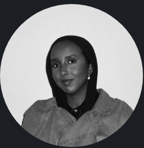

Student Success
Workflow
Redesigning a fragmented academic workflow around the people who use it.
View projectUX / PRODUCT / BEHAVIOUR
PSYCHOLOGY DATA SCIENCE UX
I’m Aini. I use psychology, data and design to understand how people use products and make complex experiences feel clearer.
EXPLORE MY WORKSELECTED WORK
Redesigning a fragmented academic workflow around the people who use it.
View projectCombining behavioural finance, technical indicators and machine learning.
Case study in progressMaking academic support easier to discover, book and manage.
Case study in progressA playful local history experience connecting people with place.
Case study in progressTurning research findings into clear, practical service decisions.
Case study in progressA BIT ABOUT ME
Different pieces,
I’m interested in the gap between how a product is meant to work and how people actually use it. Psychology and data science have taught me to look for patterns, but the most useful insights often start with listening: what someone finds confusing, what they hesitate over, or the workaround they’ve made for themselves.
Away from design, I play football, follow politics, and happily lose an evening to crime fiction or a documentary.
Explore my CVBEYOND THE PROJECTS
This portfolio shows what I’ve made. I’m working on posts about the projects, questions and experiences shaping the way I design.
SEE WHAT I’M WRITING